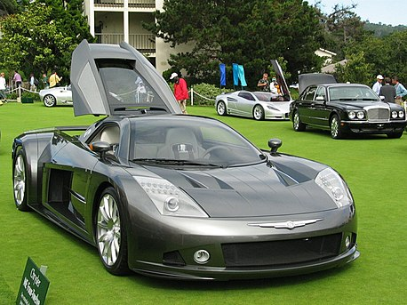
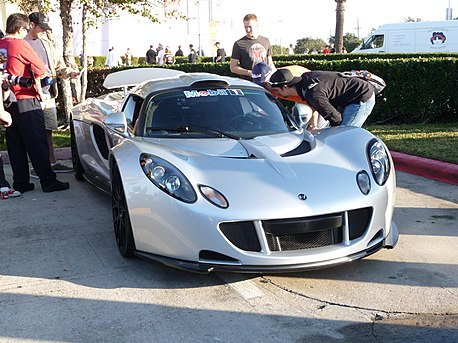
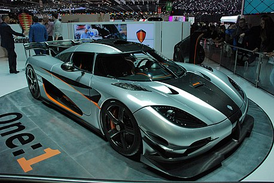
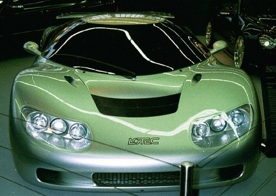
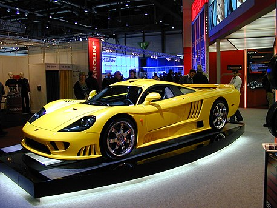
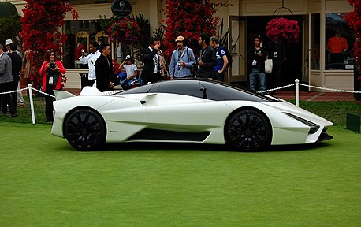

Суперкар (от англ. super — «большой» и car — «автомобиль») — условно выделяемый подкласс (верхний сегмент) более широкого класса спортивных автомобилей. Среди прочих спортивных автомобилей выделяется эксклюзивным оснащением, динамическими характеристиками и ценой. Мощность мотора измеряется в сотнях л. с., максимальная скорость — от 300 км/ч и выше (так называемый «Club 300»[1]) и соответствующая цена, измеряемая в сотнях тысяч евро или долларов.
Гиперкар компании Bugatti (входит в концерн Volkswagen AG), официально представлен публике в 2016 году. Модель
получила название в честь автогонщика Луи-Александра Широна, который выступал за марку с 1928 по
1958 год.
В Евросоюзе цены на модель в 2016 году начинались от €2,5 миллиона. Базовая цена гиперкара достигает £1,9
миллиона, а средняя стоимость опций составляет £250 тысяч. Первые клиенты получили автомобиль осенью того же
года.
Aмериканский высокопроизводительный концепт-кар, который был спроектирован, разработан и выпущен компанией Chrysler в 2004 году. Название представляет собой комбинацию среднего двигателя с четырьмя турбонагнетателями на двенадцатицилиндровом двигателе.
Всего было выпущено два автомобиля ME Four-Twelve. Дизайн экстерьера был выполнен американцем Брайаном Нилэндером.
Спортивный автомобиль американской тюнинговой компании Hennessey Performance Engineering, производившийся с 2010 по 2016 года. Автомобиль основан на базе кузова Lotus Exige с использованием двигателя LS9 от Chevrolet Corvette ZR1. Всего произведено двенадцать экземпляров: шесть купе и шесть родстеров.
Автомобиль имеет несколько рекордов скорости, в том числе с 2013 года купе удерживает рекорд Книги рекордов Гиннесса в разгоне до 300 км/ч за 13,63 секунды.
Гиперкар производства компании Koenigsegg. Соотношение массы и мощности автомобиля были равны 1:1 (0,99974 лошадиных сил на 1 килограмм), этого раньше не удавалось добиться при производстве серийных автомобилей. Именно из-за такого соотношения автомобиль и был назван «один к одному». Кузов обладает таким весом благодаря тому, что он выполнен из углепластика.
Гиперкар компании Lotec, официально представленный публике на выставке в Монте-Карло 2003 году.
В этом же 1992 году Курт Латтершмидт, руководитель компании Lotec, создал макет Lotec Sirius. Но компания была ограничена в финансовых средствах, и не могла направить большую сумму на разработку модели. В последующие года он проработал техническую составляющую и в 2001 году был показан готовый прототип. В 2008 году был представлен обновленный проект автомобиля, и с 2009 года планировалось начать производство. Стоимость автомобиля должна была составить 680 000 евро. Строительство одного автомобиля должно занимать 12 месяцев, но пока о реализации этих планов ничего не известно.
Saleen S7 — американский суперкар ручной сборки ограниченной серии. Разработан совместно Стивом Салином (первоначальная концепция и идея), «Hidden Creek Industries» (ресурсы и первоначальное финансирование), Филом Франком (компьютерное проектирование дизайна кузова и салона) и «RML Group» (инженерия шасси). Это единственный автомобиль, произведённый «Saleen» не на базе другого серийного автомобиля, и первый американский серийный суперкар. S7 дебютировал 19 августа 2000 года на исторических гонках в Монтерее. Полностью алюминиевая 427-я модель удивительно управляемая и податливая при мощности в 550 л.с. при 6400 оборотах в минуту. В 2005 году S7 получила более мощный силовой агрегат Twin Turbo, который повысил мощность двигателя до 750 лошадиных сил, а максимальная скорость составила 399 км/.
Гиперкар американской компании Shelby Super Cars. Прототип официально был представлен в 2011 году в Китае в городе Шанхае совместно с открытием там официального дилера SSC Asia[1]. В Северной Америке автомобиль был представлен на ежегодном конкурсе Пеблл Бич в городе Монтерей[2]. Компанией позиционируется как потенциальный быстрейший в мире автомобиль серийного производства. Производство запущено в 2014 году и продолжается по сей день.
Tuatara является вторым суперкаром компании Shelby Super Cars. Идея создания нового суперкара пришла компании SSC после установления 4 июля 2010 года нового мирового рекорда скорости другим суперкаром — Bugatti Veyron Super Sport летом. До этого момента компания уже обладала мировым рекордом скорости, установленным суперкаром SSC Ultimate Aero TT[3]. Дизайн автомобиля создал шеф-дизайнер шведской компании SAAB Джейсон Кастриота[4]. Долгое время автомобиль носил рабочее название SSC Ultimate Aero TT 2, пока компания не решила дать ему имя Tuatara[5]. Название происходит от рептилии туатара, обитающей на островах Новой Зеландии. На языке маори tuatara означает «пики на спине», что соответствует описанию крыльев, установленных на задней части автомобиля. Ещё одним поводом для использования названия служит особенность рептилии туатары: изменение её ДНК происходит очень быстро. Таким образом, компания Shelby Super Cars подчёркивает, что новый автомобиль обладает рядом отличий от предыдущего суперкара SSC Ultimate Aero TT. В субботу 10 октября 2020 года, на 11-километровом участке шоссе State Route 160ruen в Неваде SSC Tuatara стал самым быстрым серийным автомобилем на планете — 508,73 км/ч. В зачёт пошло среднее арифметическое значение результатов двух заездов. И если в первом британец Оливер Уэббruen разогнал Туатару до 484,53 км/ч, то при движении в обратную сторону достиг скорости 532,93 км/ч[6].
